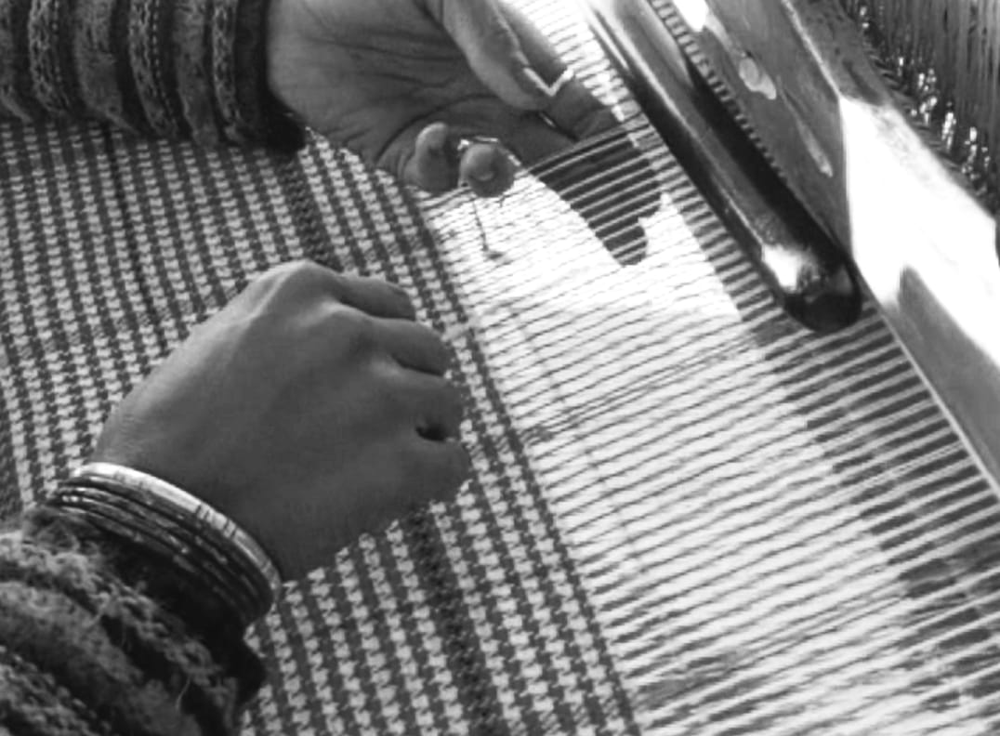

The story of Kullu shawls is not ancient in the mythical sense, nor is it accidental. It is a carefully layered history shaped by geography, migration, skill transfer, and local adaptation. To understand Kullu shawls truthfully, one must separate what already existed in Kullu from what arrived later, and then see how both merged into a distinct textile identity.
1. What Existed in Kullu Before the Shawl
Long before the Kullu shawl became known as a cultural product, the valley already had a strong wool based lifestyle. Sheep rearing was common, and wool was spun and woven within households. This weaving, however, was functional, not decorative.
Cloth produced in early Kullu was:
- Plain and thick
- Mostly undyed, using natural wool shades
- Made for warmth, daily wear, and survival
There were no elaborate borders, no complex motifs, and no color systems. Weaving was not yet a professional or market-oriented craft; it was part of domestic life. At this stage, there was no object called a “Kullu shawl.”

2. How External Weaving Knowledge Entered Kullu
The defining change came between the 18th and 19th centuries, when Kullu became more connected to surrounding Himalayan regions through movement of people and trade.
Skilled weaver communities from Bushahr (Bushehr), Kinnaur, and the Rampur belt began moving into Kullu. Some migrated seasonally, some permanently, and some were invited under local patronage. These regions already had advanced weaving traditions with:
- Structured borders
- Repeating geometric motifs
- Established dyeing knowledge
These weavers did not bring finished shawls into Kullu — they brought knowledge: how to plan borders, how to repeat motifs, how to balance color, and how to organize design on a loom.
Local Kullu households gradually learned these techniques. Over time, weaving shifted from purely domestic cloth-making to skill-based craft production.
Local Kullu households gradually learned these techniques. Over time, weaving shifted from purely domestic cloth-making to skill-based craft production.
3. The Role of Royal and Temple Patronage
Local rulers and temple institutions played an important role in stabilizing this new craft. Shawls were commissioned for:
Displays of respect and status
- Religious offerings
- Ceremonial gifting
- Displays of respect and status
This created demand for consistency and refinement. Weavers began reserving the edges of the fabric for expression. Slowly, borders became a defined space for identity. This moment marks the true birth of the Kullu shawl as a recognizable textile.
4. Where Color Came From — and How It Stayed
Color did not originate naturally within early Kullu weaving. The knowledge of dyeing arrived along with migrant weavers and dyers from neighboring Himalayan regions and the plains.
Early dyeing relied on: Plant roots, bark, flowers, and minerals; Locally available materials; Techniques learned elsewhere and adapted locally.
At first, colors were muted and earthy. As trade routes improved, new dye materials became available, allowing stronger reds, yellows, greens, and blacks to appear — mainly in borders, while the body of the shawl remained restrained.
Red (Majith/Lac): Represents blood, energy, and the spirit of Devtas.
Yellow (Turmeric): Mirrors the harvest, sun, and earth.
Green (Grasses): Symbolizes lush pastures and agriculture.
Blue (Indigo): Represents the vast sky (Aakash) and rivers.
White & Black: Natural wool representing purity and stability.
Color in Kullu shawls was never random. Each shade was balanced carefully, respecting the rhythm of the loom and the visual calm of the fabric.
5. How Motifs Evolved in Kullu
Early motifs were born from loom structure — squares, steps, and lines. Over time, these developed into identifiable forms such as Dabba (डब्बा) and Jamaa (जमा).
Movement-based patterns like Lehriya (लहरिया) entered later, reflecting flow, rhythm, and migration. Symbolic motifs such as Chasam (चसम) and Bulbul Chasam (बुलबुल चसम) added layers of meaning — protection, observation, and balance.
Nature- and belief-inspired motifs like Mandir Bel (मंदिरि बेल), Rani Bel (रिानी बेल), Bulbul (बुलबुल), and Ghuhtu (घुट्टू) connected the shawl to landscape and faith.
Over time, these motifs were combined into composite borders, creating the signature visual language of Kullu shawls.
6. Localization: When the Shawl Became Truly Kullu
By the late 19th and early 20th centuries, the borrowed techniques had fully localized. Motifs were rearranged, proportions refined, and color balance stabilized.
What emerged was not a copy of Kinnauri or Bushahr textiles, but a distinct Kullu identity — recognizable by: A calm, plain body; Strong, rhythmic borders; Balanced use of color. The Kullu shawl became a product of its land, climate, and people.
7. Handloom as Philosophy
Every Kullu shawl records time and human effort. Handloom weaving requires planning, patience, and memory. Each color change must be anticipated; each motif remembered.
Machines can imitate appearance, but not process. Handloom preserves irregularity, intention, and human presence — qualities that define authentic craft.
Conclusion: A Living Tradition
The Kullu shawl is not ancient folklore, nor modern invention. It is a living tradition shaped by migration, learning, and adaptation.
At Handiweave, this history is preserved not as nostalgia, but as responsibility — to ensure that what is worn today carries truth, skill, and respect for the hands that shaped it.